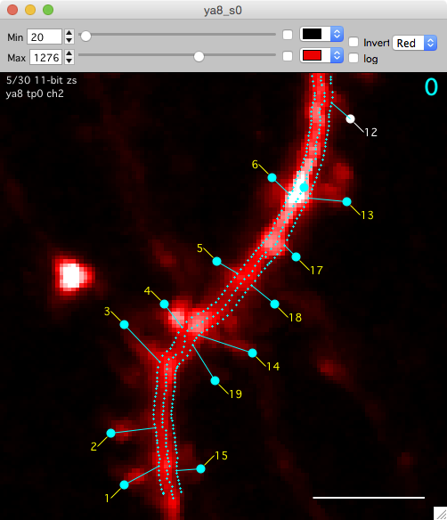
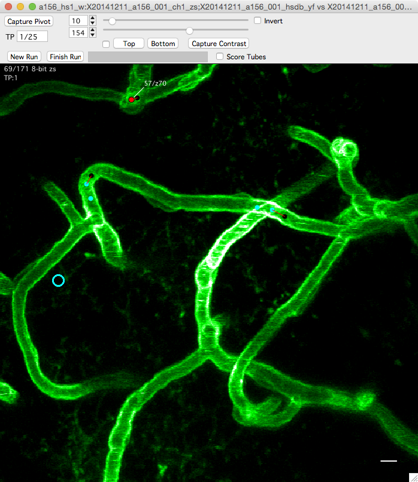
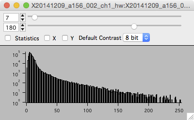
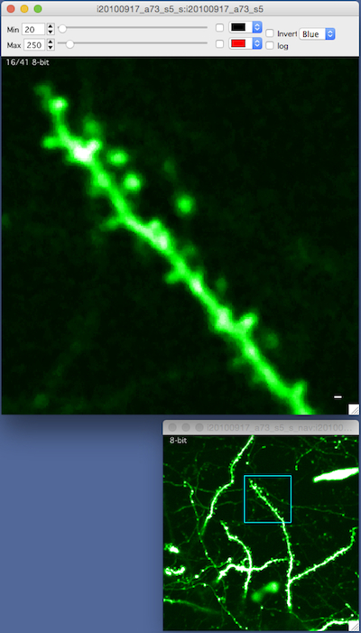
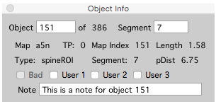
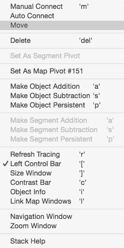

Stack
 
Overview
A stack window displays a 3D image stack, one image plane (slice) at a time.
- Use the mouse-wheel to scroll up and down through images, arrow keys to pan, +/- to zoom. Zooming with keyboard +/- follows the mouse pointer
- Image contrast is critical, open the contrast control bar with keyboard ‘c’ and adjust min/max contrast with sliders. If contrast is not set properly you will not see objects in your image that are actually there.
- View a pixel intensity histogram with keyboard ‘h’.
- Closing a stack window does not remove it from memory (the stack remains open).
Viewing multiple channels
If your stack has more than one (color) channel. Keyboard ‘1’ and ‘2’ will switch between channels.
Contrast bar
- Open the contrast bar with keyboard ‘c’
- Pixel intensity values below ‘min’ will be displayed as black
- Pixel intensity values above ‘max’ will be displayed as white
Scale bar
Control the scale bar in Options.
Window Candy
- There are five different window decorations or candy options: (i) all, (ii) none, (iii) scale, (iv) scale + scroll, and (v) something else.
- Cycle different window candies with keyboard ‘shift+c’.
- Set the default window candy in Options.
- Note: The grid will only display when window candy is set to ‘All’ (when the stack axis are visible).
Histogram

The histogram window show a histogram of pixel intensity values for each image in a stack.
- Open the histogram window with keyboard ‘h’.
- The histogram window shows a pixel intensity histogram for one image.
- Scroll through the image in a stack (mouse-wheel) and the histogram for each image will be show.
Making Z-Projections
Open a maximal Z-Projection with keyboard ‘shift+z’. This allows you to set the top and bottom slice that goes into the Z-Projection.
Once the Z-Projection window is open, it behaves just like a stack window (with only one slice). For example, you can zoom with +/-, pan with arrow keys, open the contrast bar with keyboard ‘c’, view a histogram with keyboard ‘h’, and copy/paste the image to another program, etc., etc.
Viewing a sliding z-projection
A sliding Z-Projection is a special stack where each image plane is replaced by a small maximal Z-Projection showing slices just above and below the image plane you are viewing.
You can switch to a sliding Z-Projection just like you can switch channels. Switch to a sliding Z-Projection for channel 1 with keyboard ‘3’ and for channel 2 with keyboard ‘4’.
Options for the sliding Z-Projection are set with ‘bStack - Stack Browser Options’. See the end of the page documenting Options.
Navigation window

The navigation window opens a new window with a maximal z-projection of the stack and shows the current zoomed view as a blue square.
- Right click and select ‘Navigation Window’ menu. A navigation window will be opened and your current zoomed view of the stack will be shown as a blue square.
- Zoom with +/- or pan with arrow keys and the blue-square tracks what you are looking at.
- The navigation window is, by default, a maximal z-projection of the entire stack.
Zoom window
Right click and select ‘Zoom Window’.
Point info

The Point Info window shows information about the currently selected object.
- Open the Point Info window from any stack window using keyboard ‘i’.
- Use the point info window to annotate objects with text notes.
Right click

Right-click on the image and you will get a contextual menu to activate the features described on this page.
Keyboard commands
Map Manager makes heavy use of keyboard shortcuts. Use the right click menu to see the mapping between the function and the key. Here is a list of keyboard shortcuts.
===== Stack Help ===============
Navigation
arrow-keys : Pan
+/- : zoom
Enter : Full Zoom (reset zoom)
] : Toggle between 2 different window sizes
Image Display
1 : Channel 1
2 : Channel 2
3 : Sliding Z-Project, Channel 1
4 : Sliding Z-Project, Channel 2
Toolbars
c : Toggle the contrast control bar
Child Windows
h : Histogram
z :maximal z-projection
shift+z : maximal z-projection (options)
i : Object Info Panel
shift+i : Stack Info Panel
[ : Toggle the stack db control bar (the left control bar)
Right-click menu
Navigation Window
Export Quicktime Movie... (export avi on Microsoft Windows)
Other
shift+C : Cycle candy
] : Switch between two default stack window sizes (Set in Map Manager Options)
shift+P : Set pixel/voxel size
/ : Start/Stop movie
shift + h : Print this help
Object (spine) Scoring
[ : Toggle left control bar
i : Object info panel
control+left_arrow : Go to previous spine
control+right_arrow : Go to next spine
control+click on point : Display Point Run (e.g. control+click on a spine)
control+click on line : Display Line Segment Run
l : Link windows (lower-case 'L' as in link)
Map (run plot)
a : Selected object -->> Addition
s : Selected object -->> Subtraction
p : Selected object -->> Persistent (requires selection in previous timepoint)
b : Selected object -->> Toggle bad on/off